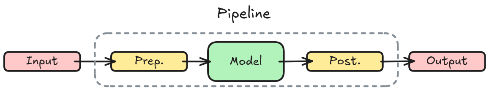

The Pipeline is a simple but powerful inference API that is readily available for a variety of machine learning tasks with any model from the Hugging Face Hub.
A pipeline wraps three things into one call:

You pass in raw data and get back a structured result without touching the underlying tensors.
ImageProcessor to generate tensor arrays (pixel_values), and format any task-specific annotations.The following example shows a pipeline for Text Classification:
accelerate libraryEnsure to have Accelerate installed first:
Then you can use it with device_map="auto" (or device="mps" on Apple silicon):
The pipeline() function supports multiple modalities, allowing you to work with text, images, audio, and even multimodal tasks. In this course we’ll focus on text tasks, but it’s useful to understand the transformer architecture’s potential, so we’ll briefly outline it.
| Task | Modality | Output | Models | Datasets |
|---|---|---|---|---|
audio-classification |
Audio | Classify audio into categories | 🔗 | 🔗 |
image-classification |
Image | Predicted class for an image | 🔗 | 🔗 |
object-detection |
Image | Locate and identify objects in images | 🔗 | 🔗 |
Refer to the Pipelines API reference for a complete list of available tasks.
Here’s an interactive demo of a sequence-to-sequence model for translation:
Batch inference is disabled by default since hardware, data, and the model itself can affect whether it improves speed or not. In the example below, when there are 4 inputs and batch_size=2 , Pipeline passes a batch of 2 inputs, twice.
Output:
[[{'generated_text': 'the secret to baking a really good cake is to use a good cake mix.\n\ni’'}],
[{'generated_text': 'a baguette is'}],
[{'generated_text': 'paris is the most beautiful city in the world.\n\ni’ve been to paris 3'}],
[{'generated_text': 'hotdogs are a staple of the american diet. they are a great source of protein and can'}]]Read more at: Pipeline batching.